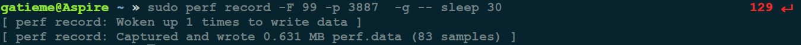
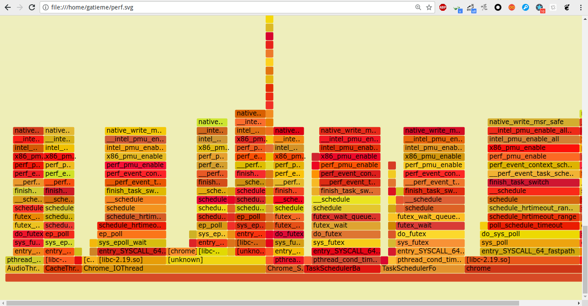
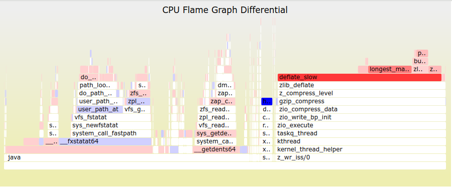
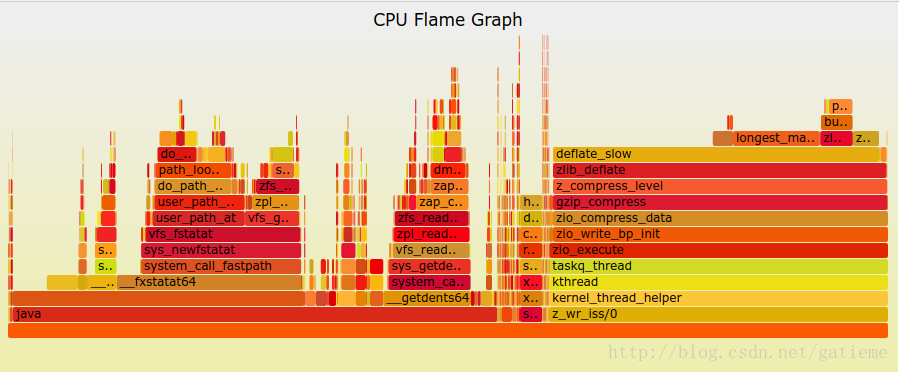
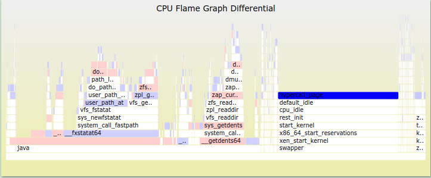
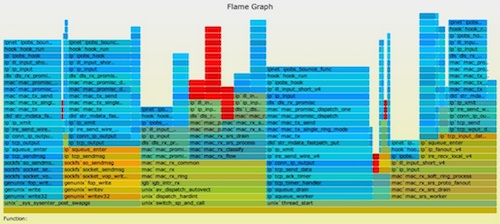
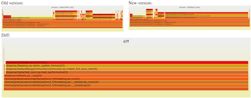

本作品采用知识共享署名-非商业性使用-相同方式共享 4.0 国际许可协议进行许可, 转载请注明出处, 谢谢合作
因本人技术水平和知识面有限, 内容如有纰漏或者需要修正的地方, 欢迎大家指正, 也欢迎大家提供一些其他好的调试工具以供收录, 鄙人在此谢谢啦
软件的性能分析, 往往需要查看 CPU 耗时, 了解瓶颈在哪里.
火焰图(flame graph) 是性能分析的利器
1 火焰图简介
很多人感冒发烧的时候, 往往会模仿神农氏尝百草的路子: 先尝尝抗病毒的药, 再试试抗细菌的药, 甭管家里有什么药挨个试, 什么中药西药, 瞎猫总会碰上死耗子, 如此做法自然是不可取的, 正确的做法应该是去医院验个血, 确诊后再对症下药.
让我们回想一下我们一般是如何调试程序的 : 通常是在没有数据的情况下依靠主观臆断来瞎蒙, 而不是考虑问题到底是什么引起的!
毫无疑问, 调优程序性能问题的时候, 同样需要对症下药. 好消息是 Brendan D. Gregg 发明了火焰图
1.1 火焰图
常见的火焰图类型有 On-CPU, Off-CPU, 还有 Memory, Hot/Cold, Differential 等等.
关于火焰图详细的介绍可以参考 Blazing Performance with Flame Graphs, 简而言之 : 整个图形看起来就像一团跳动的火焰, 这也正是其名字的由来. 燃烧在火苗尖部的就是 CPU 正在执行的操作, 不过需要说明的是颜色是随机的, 本身并没有特殊的含义, 纵向表示调用栈的深度, 横向表示消耗的时间. 因为调用栈在横向会按照字母排序, 并且同样的调用栈会做合并, 所以一个格子的宽度越大越说明其可能是瓶颈. 综上所述, 主要就是看那些比较宽大的火苗, 特别留意那些类似平顶山的火苗.
要生成火焰图, 必须要有一个顺手的 Tracer 工具, 如果操作系统是 Linux 的话, 那么选择通常是 perf, systemtap 中的一种. 其中 perf 相对更常用, 因为它时 Linux Kernel 内置的性能调优工具, 多数 Linux 都包含了它, 有兴趣的读者稍后可以参考 Linux Profiling at Netflix 中的介绍, 尤其是里面关于如何处理 Broken stacks 问题的描述, 建议多看几遍, 而 systemtap 相对更强大, 不过缺点是你需要先学会它本身的编程语言.
早期火焰图在 Nginx 和 社区比较活跃, 如果你是一个 Nginx 开发或者优化人员, 那么我强烈推荐你使用 春哥 的 nginx-systemtap-toolkit, 乍一看名字你可能会误以为这个工具包是 nginx 专用的, 实际上这里面很多工具适用于任何 C/CPP 语言编写的程序：
| 程序 | 功能 |
|---|---|
sample-bt | 用来生成 On-CPU 火焰图的采样数据(DEMO) |
sample-bt-off-cpu | 用来生成 Off-CPU 火焰图的采样数据 (DEMO) |
1.2 On/Off-CPU 火焰图
那么什么时候使用 On-CPU 火焰图? 什么时候使用 Off-CPU 火焰图呢?
取决于当前的瓶颈到底是什么, 如果是 CPU 则使用 On-CPU 火焰图, 如果是 IO 或锁则使用 Off-CPU 火焰图. 如果无法确定, 那么可以通过压测工具来确认 : 通过压测工具看看能否让 CPU 使用率趋于饱和, 如果能那么使用 On-CPU 火焰图, 如果不管怎么压, CPU 使用率始终上不来, 那么多半说明程序被 IO 或锁卡住了, 此时适合使用 Off-CPU 火焰图.
如果还是确认不了, 那么不妨 On-CPU 火焰图和 Off-CPU 火焰图都搞搞, 正常情况下它们的差异会比较大, 如果两张火焰图长得差不多, 那么通常认为 CPU 被其它进程抢占了.
在采样数据的时候, 最好通过压测工具对程序持续施压, 以便采集到足够的样本. 关于压测工具的选择, 如果选择 ab 的话, 那么务必记得开启 -k 选项, 以避免耗尽系统的可用端口. 此外, 我建议尝试使用诸如 wrk 之类更现代的压测工具.
1.3 火焰图可视化生成器
Brendan D. Gregg 的 Flame Graph 工程实现了一套生成火焰图的脚本.
Flame Graph 项目位于 GitHub上
https://github.com/brendangregg/FlameGraph
用 git 将其 clone下来
git clone https://github.com/brendangregg/FlameGraph.git
- 1
生成和创建火焰图需要如下几个步骤
| 流程 | 描述 | 脚本 |
|---|---|---|
| 捕获堆栈 | 使用 perf/systemtap/dtrace 等工具抓取程序的运行堆栈 | perf/systemtap/dtrace |
| 折叠堆栈 | trace 工具抓取的系统和程序运行每一时刻的堆栈信息, 需要对他们进行分析组合, 将重复的堆栈累计在一起, 从而体现出负载和关键路径 | FlameGraph 中的 stackcollapse 程序 |
| 生成火焰图 | 分析 stackcollapse 输出的堆栈信息生成火焰图 | flamegraph.pl |
不同的 trace 工具抓取到的信息不同, 因此 Flame Graph 提供了一系列的 stackcollapse 工具.
stackcollapse | 描述 |
|---|---|
| stackcollapse.pl | for DTrace stacks |
| stackcollapse-perf.pl | for Linux perf_events “perf script” output |
| stackcollapse-pmc.pl | for FreeBSD pmcstat -G stacks |
| stackcollapse-stap.pl | for SystemTap stacks |
| stackcollapse-instruments.pl | for XCode Instruments |
| stackcollapse-vtune.pl | for Intel VTune profiles |
| stackcollapse-ljp.awk | for Lightweight Java Profiler |
| stackcollapse-jstack.pl | for Java jstack(1) output |
| stackcollapse-gdb.pl | for gdb(1) stacks |
| stackcollapse-go.pl | for Golang pprof stacks |
| stackcollapse-vsprof.pl | for Microsoft Visual Studio profiles |
2 用 perf 生成火焰图
2.1 perf 采集数据
让我们从 perf 命令(performance 的缩写)讲起, 它是 Linux 系统原生提供的性能分析工具, 会返回 CPU 正在执行的函数名以及调用栈(stack)
sudo perf record -F 99 -p 3887 -g -- sleep 30
- 1
[外链图片转存失败,源站可能有防盗链机制,建议将图片保存下来直接上传(img-KNgLEYyP-1624459176139)(./perf_record_chrome.png)]
perf record 表示采集系统事件, 没有使用 -e 指定采集事件, 则默认采集 cycles(即 CPU clock 周期), -F 99 表示每秒 99 次, -p 13204 是进程号, 即对哪个进程进行分析, -g 表示记录调用栈, sleep 30 则是持续 30 秒.
-F指定采样频率为99Hz(每秒99次), 如果99次都返回同一个函数名, 那就说明CPU这一秒钟都在执行同一个函数, 可能存在性能问题.
运行后会产生一个庞大的文本文件. 如果一台服务器有 16 个 CPU, 每秒抽样 99 次, 持续 30 秒, 就得到 47,520 个调用栈, 长达几十万甚至上百万行.
为了便于阅读, perf record 命令可以统计每个调用栈出现的百分比, 然后从高到低排列.
sudo perf report -n --stdio
- 1

2.2 生成火焰图
首先用 perf script 工具对 perf.data 进行解析
# 生成折叠后的调用栈
perf script -i perf.data &> perf.unfold
- 1
- 2
将解析出来的信息存下来, 供生成火焰图
首先用 stackcollapse-perf.pl 将 perf 解析出的内容 perf.unfold 中的符号进行折叠 :
# 生成火焰图
./stackcollapse-perf.pl perf.unfold &> perf.folded
- 1
- 2
最后生成 svg 图
./flamegraph.pl perf.folded > perf.svg
- 1
我们可以使用管道将上面的流程简化为一条命令
perf script | FlameGraph/stackcollapse-perf.pl | FlameGraph/flamegraph.pl > process.svg
- 1

3 解析火焰图
最后就可以用浏览器打开火焰图进行分析啦.
3.1 火焰图的含义
火焰图是基于 stack 信息生成的 SVG 图片, 用来展示 CPU 的调用栈。
y 轴表示调用栈, 每一层都是一个函数. 调用栈越深, 火焰就越高, 顶部就是正在执行的函数, 下方都是它的父函数.
x 轴表示抽样数, 如果一个函数在 x 轴占据的宽度越宽, 就表示它被抽到的次数多, 即执行的时间长. 注意, x 轴不代表时间, 而是所有的调用栈合并后, 按字母顺序排列的.
火焰图就是看顶层的哪个函数占据的宽度最大. 只要有 “平顶”(plateaus), 就表示该函数可能存在性能问题。
颜色没有特殊含义, 因为火焰图表示的是 CPU 的繁忙程度, 所以一般选择暖色调.
3.2 互动性
火焰图是 SVG 图片, 可以与用户互动.
- 鼠标悬浮
火焰的每一层都会标注函数名, 鼠标悬浮时会显示完整的函数名、抽样抽中的次数、占据总抽样次数的百分比
- 点击放大
在某一层点击，火焰图会水平放大，该层会占据所有宽度，显示详细信息。
左上角会同时显示 “Reset Zoom”, 点击该链接, 图片就会恢复原样.
- 搜索
按下 Ctrl + F 会显示一个搜索框，用户可以输入关键词或正则表达式，所有符合条件的函数名会高亮显示.
3.3 局限
两种情况下, 无法画出火焰图, 需要修正系统行为.
- 调用栈不完整
当调用栈过深时，某些系统只返回前面的一部分（比如前10层）。
- 函数名缺失
有些函数没有名字，编译器只用内存地址来表示（比如匿名函数）。
3.4 浏览器的火焰图
Chrome 浏览器可以生成页面脚本的火焰图, 用来进行 CPU 分析.
打开开发者工具, 切换到 Performance 面板. 然后, 点击"录制" 按钮, 开始记录数据. 这时, 可以在页面进行各种操作, 然后停止"录制".
这时, 开发者工具会显示一个时间轴. 它的下方就是火焰图.
浏览器的火焰图与标准火焰图有两点差异 : 它是倒置的(即调用栈最顶端的函数在最下方); x 轴是时间轴, 而不是抽样次数.
4 红蓝分叉火焰图
参考 http://www.brendangregg.com/blog/2014-11-09/differential-flame-graphs.html
幸亏有了 CPU 火焰图(flame graphs), CPU 使用率的问题一般都比较好定位. 但要处理性能回退问题, 就要在修改前后或者不同时期和场景下的火焰图之间, 不断切换对比, 来找出问题所在, 这感觉就是像在太阳系中搜寻冥王星. 虽然, 这种方法可以解决问题, 但我觉得应该会有更好的办法.
所以, 下面就隆重介绍 红/蓝差分火焰图(red/blue differential flame graphs)
4.1 红蓝差分火焰图示例

上面是一副交互式 SVG 格式图片. 图中使用了两种颜色来表示状态, 红色表示增长, 蓝色表示衰减.
这张火焰图中各火焰的形状和大小都是和第二次抓取的 profile 文件对应的 CPU 火焰图是相同的. (其中, y 轴表示栈的深度, x 轴表示样本的总数, 栈帧的宽度表示了 profile 文件中该函数出现的比例, 最顶层表示正在运行的函数, 再往下就是调用它的栈).
在下面这个案例展示了, 在系统升级后, 一个工作载荷的 CPU 使用率上升了. 下面是对应的 CPU 火焰图(SVG 格式)

通常, 在标准的火焰图中栈帧和栈塔的颜色是随机选择的. 而在红/蓝差分火焰图中, 使用不同的颜色来表示两个 profile 文件中的差异部分.
在第二个 profile 中 deflate_slow( ) 函数以及它后续调用的函数运行的次数要比前一次更多, 所以在上图中这个栈帧被标为了红色. 可以看出问题的原因是ZFS的压缩功能被启用了, 而在系统升级前这项功能是关闭的.
这个例子过于简单, 我甚至可以不用差分火焰图也能分析出来. 但想象一下, 如果是在分析一个微小的性能下降, 比如说小于5%, 而且代码也更加复杂的时候, 问题就为那么好处理了.
4.2 红蓝差分火焰图简介
这个事情我已经讨论了好几年了, 最终我自己编写了一个我个人认为有价值的实现。它的工作原理是这样的 :
-
抓取修改前的堆栈
profile1文件 -
抓取修改后的堆栈
profile2文件 -
使用
profile2来生成火焰图. (这样栈帧的宽度就是以profile2文件为基准的) -
使用 “2-1” 的差异来对火焰图重新上色. 上色的原则是, 如果栈帧在
profile2中出现出现的次数更多, 则标为红色, 否则标为蓝色. 色彩是根据修改前后的差异来填充的.
这样做的目的是, 同时使用了修改前后的 profile 文件进行对比, 在进行功能验证测试或者评估代码修改对性能的影响时，会非常有用. 新的火焰图是基于修改后的 profile 文件生成(所以栈帧的宽度仍然显示了当前的CPU消耗). 通过颜色的对比，就可以了解到系统性能差异的原因。
只有对性能产生直接影响的函数才会标注颜色（比如说，正在运行的函数），它所调用的子函数不会重复标注。
4.3 生成红/蓝差分火焰图
作者的 GitHub 仓库 FlameGrdph 中实现了一个程序脚本，difffolded.pl 用来生成红蓝差分火焰图. 为了展示工具是如何工作的, 用 Linux perf_events 来演示一下操作步骤. 你也可以使用其他 profiler/tracer.
- 抓取修改前的profile 1文件:
# 抓取数据
perf record -F 99 -a -g -- sleep 30
# 解析数据生成堆栈信息
perf script > out.stacks1
# 折叠堆栈
./stackcollapse-perf.pl ../out.stacks1 > out.folded1
- 1
- 2
- 3
- 4
- 5
- 6
- 一段时间后 (或者程序代码修改后), 抓取 profile 2` 文件
# 抓取数据
perf record -F 99 -a -g -- sleep 30
# 解析数据生成堆栈信息
perf script > out.stacks2
# 折叠堆栈
./stackcollapse-perf.pl ../out.stacks2 > out.folded2
- 1
- 2
- 3
- 4
- 5
- 6
生成红蓝差分火焰图
./difffolded.pl out.folded1 out.folded2 | ./flamegraph.pl > diff2.svg
- 1
difffolded.pl 只能对 “折叠” 过的堆栈 profile 文件进行操作, 折叠操作 是由前面的 stackcollapse 系列脚本完成的. 脚本共输出 3 列数据, 其中一列代表折叠的调用栈, 另两列为修改前后 profile 文件的统计数据.
func_a;func_b;func_c 31 33
[...]
- 1
- 2
在上面的例子中 “funca()->funcb()->func_c()” 代表调用栈，这个调用栈在 profile1文件中共出现了31次, 在profile2文件中共出现了33次. 然后, 使用flamegraph.pl脚本处理这3` 列数据, 会自动生成一张红/蓝差分火焰图.
再介绍一些有用的选项：
| 其他选项 | 描述 |
|---|---|
| difffolded.pl -n | 这个选项会把两个profile文件中的数据规范化，使其能相互匹配上。如果你不这样做，抓取到所有栈的统计值肯定会不相同，因为抓取的时间和CPU负载都不同。这样的话，看上去要么就是一片红（负载增加），要么就是一片蓝（负载下降）。-n选项对第一个profile文件进行了平衡，这样你就可以得到完整红/蓝图谱 |
| difffolded.pl -x | 这个选项会把16进制的地址删掉。 profiler时常会无法将地址转换为符号，这样的话栈里就会有16进制地址。如果这个地址在两个profile文件中不同，这两个栈就会认为是不同的栈，而实际上它们是相同的。遇到这样的问题就用-x选项搞定 |
| flamegraph.pl --negate | 用于颠倒红/蓝配色。 在下面的章节中，会用到这个功能 |
4.4 不足之处
虽然红/蓝差分火焰图很有用, 但实际上还是有一个问题 : 如果一个代码执行路径完全消失了, 那么在火焰图中就找不到地方来标注蓝色. 你只能看到当前的 CPU 使用情况, 而不知道为什么会变成这样.
一个办法是, 将对比顺序颠倒, 画一个相反的差分火焰图. 例如 :

上面的火焰图是以修改前的 profile 文件为基准, 颜色表达了将要发生的情况. 右边使用蓝色高亮显示的部分, 从中可以看出修改后 CPU Idle 消耗的 CPU 时间会变少. (其实, 通常会把 cpuidle 给过滤掉, 使用命令行 grep -v cpuidle)
图中把消失的代码也突显了出来(或者应该是说, 没有突显), 因为修改前并没有使能压缩功能, 所以它没有出现在修改前的 profile 文件了, 也就没有了被表为红色的部分.
下面是对应的命令行：
./difffolded.pl out.folded2 out.folded1 | ./flamegraph.pl --negate > diff1.svg
- 1
这样, 把前面生成 diff2.svg 一并使用，我们就能得到:
| 火焰图信息 | 描述 |
|---|---|
| diff1.svg | 宽度是以修改前profile文件为基准，颜色表明将要发生的情况 |
| diff2.svg | 宽度是以修改后profile文件为基准，颜色表明已经发生的情况 |
如果是在做功能验证测试，我会同时生成这两张图。
4.5 CPI 火焰图
这些脚本开始是被使用在CPI火焰图 的分析上. 与比较修改前后的 profile 文件不同, 在分析 CPI 火焰图时, 可以分析 CPU 工作周期与停顿周期的差异变化, 这样可以凸显出CPU的工作状态来.
4.6 其他的差分火焰图

也有其他人做过类似的工作. Robert Mustacchi 在不久前也做了一些尝试，他使用的方法类似于代码检视时的标色风格：只显示了差异的部分，红色表示新增（上升）的代码路径，蓝色表示删除（下降）的代码路径。一个关键的差别是栈帧的宽度只体现了差异的样本数。右边是一个例子。这个是个很好的主意，但在实际使用中会感觉有点奇怪，因为缺失了完整profile文件的上下文作为背景，这张图显得有些难以理解。

Cor-Paul Bezemer也制作了一种差分显示方法flamegraphdiff, 他同时将3张火焰图放在同一张图中，修改前后的标准火焰图各一张，下面再补充了一张差分火焰图，但栈帧宽度也是差异的样本数。 上图是一个例子. 在差分图中将鼠标移到栈帧上，3张图中同一栈帧都会被高亮显示。这种方法中补充了两张标准的火焰图，因此解决了上下文的问题。
我们3人的差分火焰图，都各有所长。三者可以结合起来使用：Cor-Paul方法中上方的两张图，可以用我的diff1.svg 和 diff2.svg。下方的火焰图可以用Robert的方式。为保持一致性，下方的火焰图可以用我的着色方式：蓝->白->红。
火焰图正在广泛传播中，现在很多公司都在使用它。如果大家知道有其他的实现差分火焰图的方式，我也不会感到惊讶。（请在评论中告诉我）
4.7 总结
如果你遇到了性能回退问题，红/蓝差分火焰图是找到根因的最快方式。这种方式抓取了两张普通的火焰图，然后进行对比，并对差异部分进行标色：红色表示上升，蓝色表示下降。 差分火焰图是以当前（“修改后”）的profile文件作为基准，形状和大小都保持不变。因此你通过色彩的差异就能够很直观的找到差异部分，且可以看出为什么会有这样的差异。
差分火焰图可以应用到项目的每日构建中，这样性能回退的问题就可以及时地被发现和修正。
via: http://www.brendangregg.com/blog/2014-11-09/differential-flame-graphs.html
5 参考
-
本作品/博文 ( AderStep-紫夜阑珊-青伶巷草 Copyright ©2013-2017 ), 由 成坚(gatieme) 创作.
-
采用
知识共享署名-非商业性使用-相同方式共享 4.0 国际许可协议进行许可. 欢迎转载、使用、重新发布, 但务必保留文章署名成坚gatieme ( 包含链接: http://blog.csdn.net/gatieme ), 不得用于商业目的. -
基于本文修改后的作品务必以相同的许可发布. 如有任何疑问，请与我联系.


 979
979

 回复
回复


{kind=link}
{kind=link}
{kind=link}